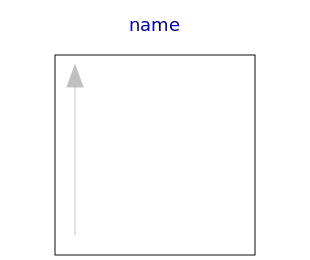

.
Modelica
.
Math
.
Icons
Information
Icons for Math
Contents
Name
Description

AxisLeft
Basic icon for mathematical function with y-axis on left side
AxisCenter
Basic icon for mathematical function with y-axis in the center
Generated at 2015-08-04T10:18:23Z by
OpenModelica
OpenModelica 1.9.3~dev-547-g0ef9219